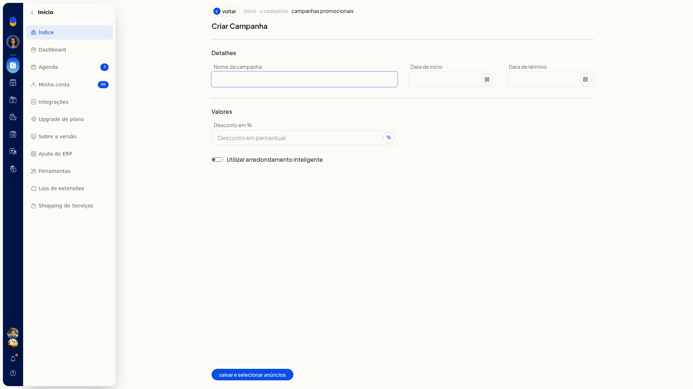
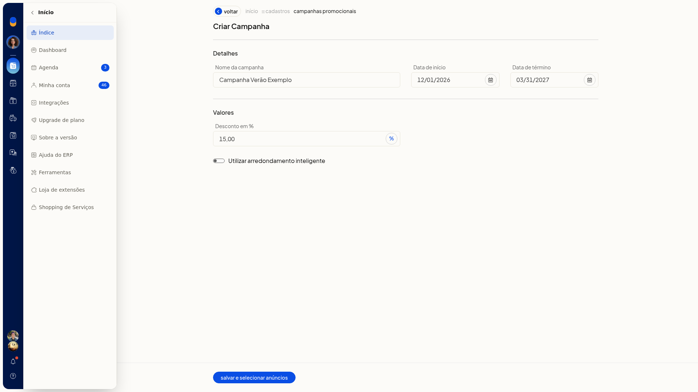
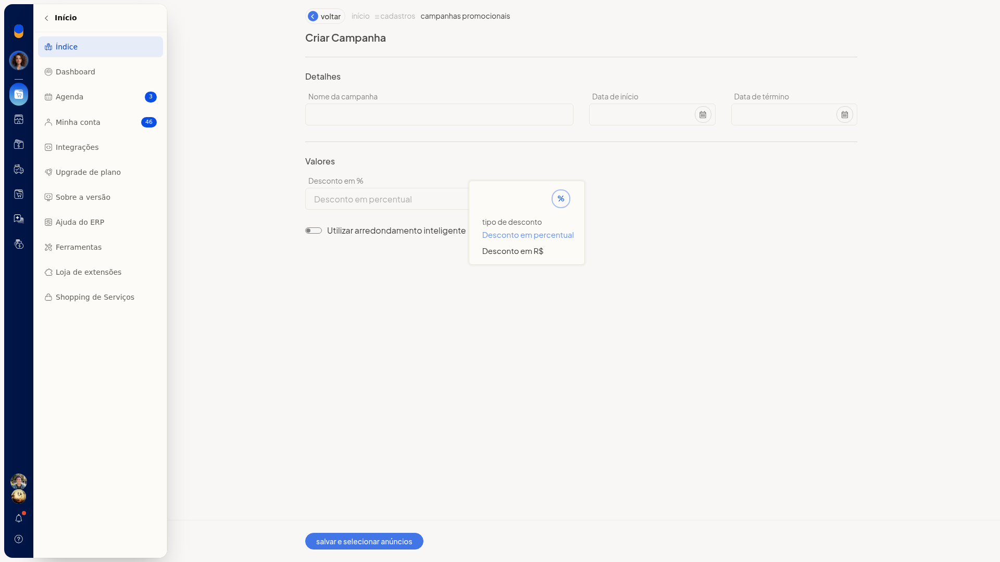
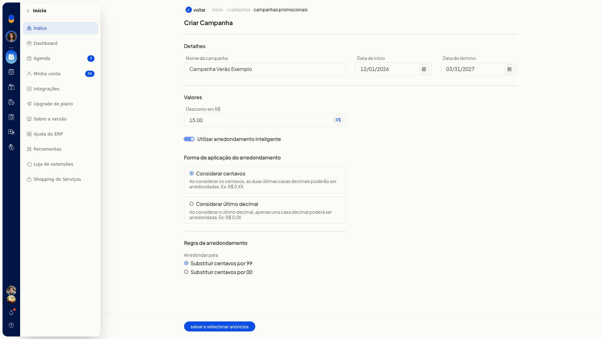
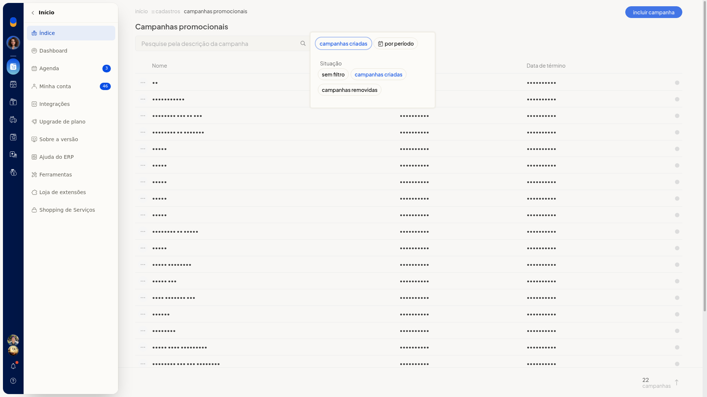
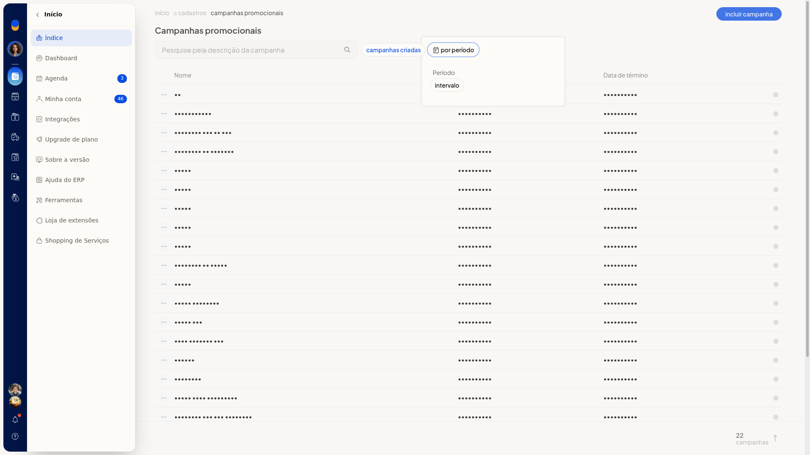
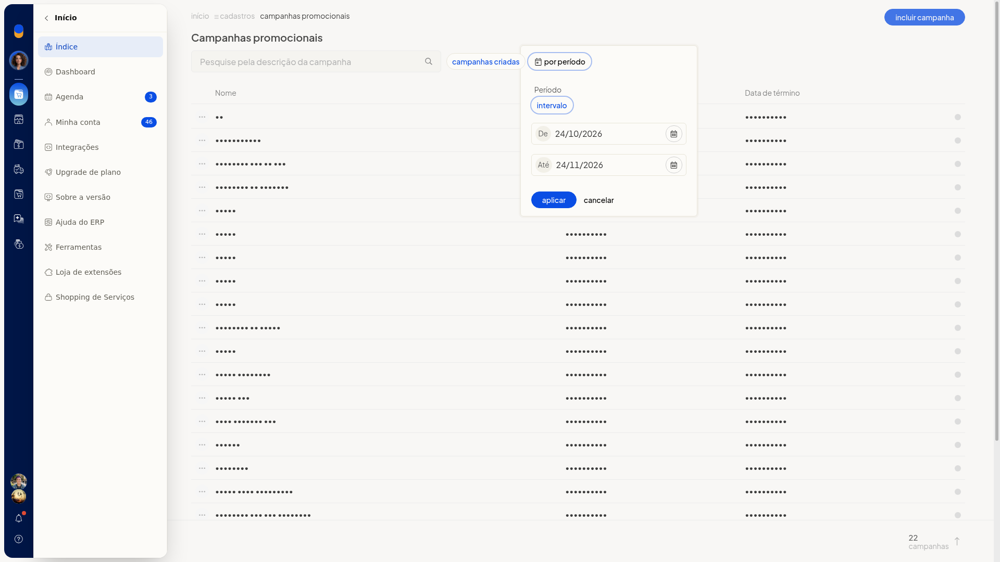
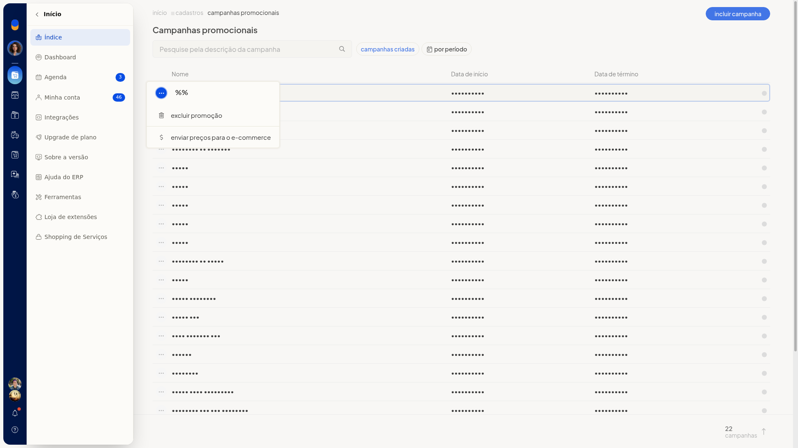

Campanhas promocionais
No ERP da Olist, campanhas promocionais servem para cadastrar uma promoção com nome, período e desconto, em percentual ou em reais. Você também pode ativar o arredondamento inteligente e definir como os centavos do preço serão tratados.
Na lista você pesquisa campanhas pela descrição e filtra por situação e por período. O cadastro fica em Cadastros > Campanhas Promocionais, no botão Incluir campanha.
Importante
- Nenhum campo do formulário Criar Campanha aparece como obrigatório.
- Nesta tela não há opção para criar campanha por planilha.
- Para sair sem gravar, use Voltar. A lista retorna e a campanha preenchida não é incluída.
Instruções
-
Acesse Cadastros > Campanhas Promocionais. A lista mostra as campanhas já cadastradas, com as colunas Nome, Data de início e Data de término.
-
Clique em Incluir campanha.

-
Informe Nome da campanha, Data de início e Data de término. As datas seguem o formato mm/dd/yyyy.

-
No controle ao lado do valor, escolha Desconto em percentual ou Desconto em R$ e informe o desconto. A escolha altera o rótulo do campo de valor para Desconto em % ou Desconto em R$.

-
Se quiser, ative Utilizar arredondamento inteligente. Informe Forma de aplicação do arredondamento: Considerar centavos (Ex R$ 0,XX) ou Considerar último decimal (Ex R$ 0,0X). Em Arredondar para, escolha Substituir centavos por 99 ou Substituir centavos por 00.

-
Clique em Salvar e selecionar anúncios para salvar a campanha e seguir para a seleção de anúncios.
Informações adicionais
Pesquisa e filtros da lista
- Use Pesquise pela descrição da campanha para localizar uma campanha pelo nome.
- O filtro campanhas criadas abre Situação, com sem filtro, campanhas criadas e campanhas removidas.

- O filtro por período abre Período. Em Intervalo, informe De e Até e clique em Aplicar. Para fechar sem aplicar, clique em Cancelar.


Ações de cada campanha
No menu da linha de cada campanha aparecem Excluir promoção e Enviar preços para o e-commerce.
